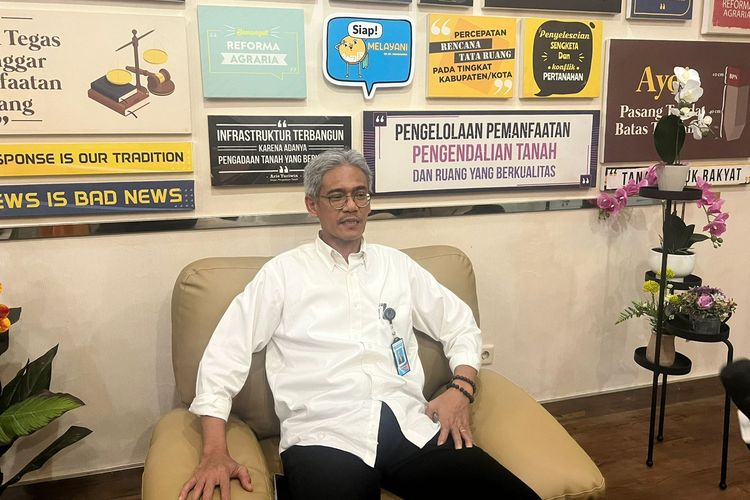
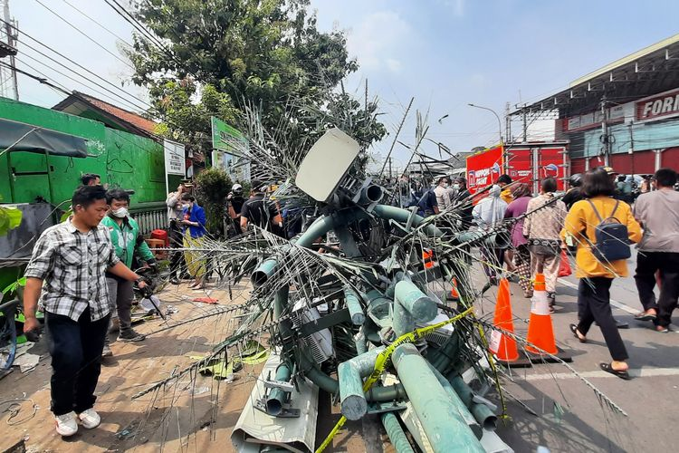
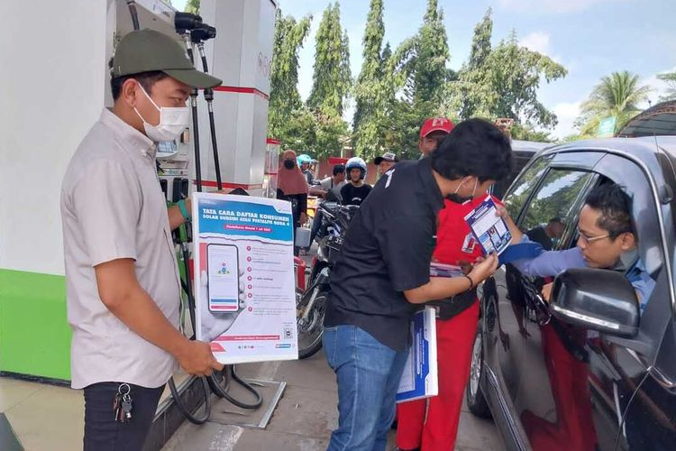

BPN Tak Akan Terbitkan Sertifikat LSD yang Dikuasai Pengembang

JAKARTA, KOMPAS.com - Kantor Pertanahan (Kantah) setempat tidak dapat menerbitkan sertifikat bagi lahan hijau yang dikuasai oleh pengembang.
Sebab, Kementerian Agraria dan Tata Ruang/Badan Pertanahan Nasional (ATR/BPN) telah menetapkan aturan Lahan Sawah Dilindungi (LSD) di sejumlah kabupaten/kota dan provinsi.
Penetapan LSD diharapkan dapat mengendalikan alih fungsi lahan sawah dan memenuhi ketersediaannya untuk mendukung ketahanan pangan nasional.
Ini tercantum dalam Keputusan Menteri (Kepmen) ATR/Kepala BPN Nomor 1589/Sk-Hk 02.01/XII/2021 tentang Penetapan LSD di Kabupaten/Kota di Provinsi Sumatra Barat, Provinsi Banten, Provinsi Jawa Barat, Provinsi Jawa Tengah, Provinsi DI Yogyakarta, Provinsi Jawa Timur, Provinsi Bali, dan Provinsi Nusa Tenggara Barat.
Dengan begitu, pengembang tidak serta-merta bisa membangun perumahan maupun kawasan industri karena harus memperhatikan aturan baru ini.
Penulis : Suhaiela Bahfein
Editor : Hilda B Alexander
Tags :
Olahraga
Berita Hangat
Sains
Lain-lain
Siang Mencekam di Depan SDN Kota Baru, Sejumlah Siswa Dijemput Maut akibat Ditabrak Truk Saat Menunggu Orangtuanya

JAKARTA, KOMPAS.com - Siang itu mendadak mencekam ketika suara ibu-ibu menjerit di sekitar depan Sekolah Dasar (SD) Negeri Kota Baru II dan III Bekasi.
Salah satu warga setempat bernama Robin (40) pun langsung bergegas ke sumber suara setelah mendengar keributan tersebut.
Suara teriakan itu muncul karena sebuah truk menghantam puluhan orang yang tengah berada di Jalan Sultan Agung Km 28,5 Kelurahan Kota Baru, Bekasi Barat, Kota Bekasi, Rabu (31/8/2022) siang.
Robin tiba di lokasi sekitar pukul 11.00 WIB usai berjalan kaki dari rumahnya yang berjarak sekitar 700 meter dari sekolah. "Saya datang sudah ramai. Sudah jatuh-jatuh. Korban banyak," ujar Robin, Rabu.
Saat itu, halte di depan Sekolah Dasar (SD) Negeri Kota Baru II dan III tersebut sedang dipenuhi oleh anak yang sedang menunggu jemputan sepulang sekolah.
Setidaknya, ada 30 orang yang menjadi korban kecelakaan tersebut, 10 di antaranya dilaporkan meninggal.
Ketua RT 001/RW 022 Kota Baru, Yanto, mengatakan, truk itu menghantam tower, lalu pohon. "Yang dihajar tower dulu. Itu kan cor-coran, begitu dihajar pecah tuh," kata Yanto.
MyPertamina Tembus 1 Juta Pendaftar, 70 Persen Pengguna Pertalite

JAKARTA, KOMPAS.com - Sebagai badan usaha yang ditugaskan menyalurkan BBM bersubsidi, Pertamina Patra Niaga terus berkomitmen dalam menyediakan Pertalite dan Solar bagi kebutuhan masyarakat.
Selain memastikan ketersediaannya, Pertamina Patra Niaga, Sub Holding Commercial Trading PT Pertamina (Persero), juga terus melanjutkan inisiatif pendaftaran Program Subsidi Tepat sebagai upaya penyaluran subsidi yang lebih tepat sasaran.
Corporate Secretary Pertamina Patra Niaga Irto Ginting menjelaskan bahwa Program Subsidi Tepat lewat MyPertamina ini bertujuan untuk mendata kendaraan yang menggunakan Pertalite dan Solar.
Baca juga: Ingin Penyaluran BBM Subsidi Tepat Sasaran, Erick Thohir Dorong Penerapan MyPertamina “Pertamina perlu mendata konsumsi BBM bersubsidi sehingga penyalurannya bisa lebih termonitor dan mencegah adanya kecurangan atau penyalahgunaan di lapangan. Saat ini pun fokusnya masih pada pendaftaran dan sosialisasi, memastikan kesiapan sistem serta operasional di lapangan sambil terus memantau perkembangan revisi Peraturan Presiden No. 191 Tahun 2014 yang menjadi regulasi acuan penetapan penyaluran BBM bersubsidi,” jelas Irto dalam siaran pers, Kamis (1/9/2022).
Hingga akhir Agustus ini, sudah lebih dari satu juta unit kendaraan yang didaftarkan di MyPertamina. Dari semua kendaraan tersebut sedikit ada pergeseran, di mana persentase jenis kendaraan Pertalite hampir 70 persen, dan kendaraan pengguna Solar subsidi yang didaftarkan meningkat menjadi lebih dari 30 persen.
“Dari data tersebut, untuk pengguna Pertalite yang mendaftar masih didominasi oleh pengguna pribadi. Sedangkan untuk Solar komposisinya cukup seimbang antara pengguna pribadi maupun kendaraan umum,” tambah Irto.
Penulis : Kiki Safitri
Editor : Akhdi Martin Pratama